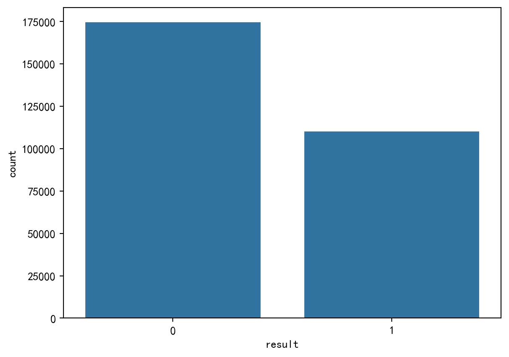
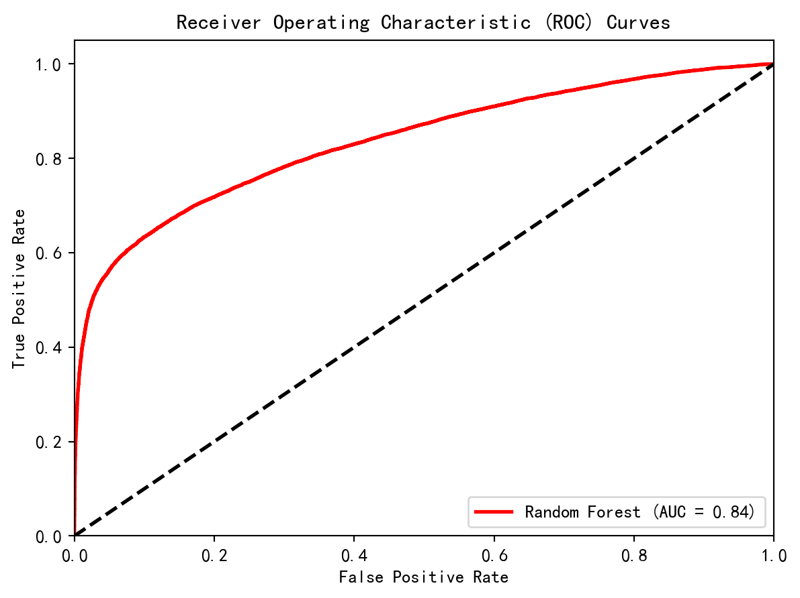

import pandas as pd
import numpy as np
import seaborn as sns
import matplotlib.pyplot as plt
from sklearn.model_selection import train_test_split, GridSearchCV, cross_val_score
from sklearn.ensemble import RandomForestClassifier, GradientBoostingClassifier
from sklearn.metrics import cohen_kappa_score
from sklearn.metrics import classification_report, accuracy_score
from sklearn.metrics import confusion_matrix, accuracy_score, precision_score, recall_score, f1_score
from sklearn.model_selection import StratifiedKFold
from sklearn.preprocessing import OneHotEncoder
from sklearn.compose import ColumnTransformer
from sklearn.pipeline import Pipeline机器学习模型构建
在本章，尝试了多种机器学习方法，但由于数据量很大，但计算机资源有限，因此这里只展示了目前训练较好的模型和最好的参数选择。
载入数据
Care_data = pd.read_excel("D:\\Rstudio\\Rmyfile\\dear Cancan.R\\select_data.xlsx")
print(f"Number of rows: {Care_data.shape[0]}, Number of columns: {Care_data.shape[1]}")
print(Care_data)
print('数据载入完毕============================================1')Number of rows: 284550, Number of columns: 19
month day sched_dep_time dep_delay sched_arr_time arr_delay \
0 1 1 515 2 819 11
1 1 1 529 4 830 20
2 1 1 540 2 850 33
3 1 1 545 -1 1022 -18
4 1 1 600 -6 837 -25
... ... ... ... ... ... ...
284545 9 30 2245 -5 2351 -17
284546 9 30 2250 -10 7 -20
284547 9 30 2246 -5 1 -16
284548 9 30 2255 12 2358 1
284549 9 30 2359 -10 350 -25
carrier origin dest distance hour temp dewp humid wind_dir \
0 UA EWR IAH 1400 5 39.02 28.04 64.43 260
1 UA LGA IAH 1416 5 39.92 24.98 54.81 250
2 AA JFK MIA 1089 5 39.02 26.96 61.63 260
3 B6 JFK BQN 1576 5 39.02 26.96 61.63 260
4 DL LGA ATL 762 6 39.92 24.98 54.81 260
... ... ... ... ... ... ... ... ... ...
284545 B6 JFK SYR 209 22 60.98 55.94 83.47 230
284546 B6 JFK BUF 301 22 60.98 55.94 83.47 230
284547 B6 JFK ROC 264 22 60.98 55.94 83.47 230
284548 B6 JFK BOS 187 22 60.98 55.94 83.47 230
284549 B6 JFK PSE 1617 23 60.08 55.04 83.41 240
wind_speed precip pressure visib
0 12.65858 0.0 1011.9 10.0
1 14.96014 0.0 1011.4 10.0
2 14.96014 0.0 1012.1 10.0
3 14.96014 0.0 1012.1 10.0
4 16.11092 0.0 1011.7 10.0
... ... ... ... ...
284545 9.20624 0.0 1016.5 10.0
284546 9.20624 0.0 1016.5 10.0
284547 9.20624 0.0 1016.5 10.0
284548 9.20624 0.0 1016.5 10.0
284549 9.20624 0.0 1016.3 10.0
[284550 rows x 19 columns]
数据载入完毕============================================1数据处理
Care_data['result'] = Care_data['arr_delay'].apply(lambda x: 1 if x > 0 else 0)
print('二分类变量添加完毕=========================================2')二分类变量添加完毕=========================================2plt.rcParams['font.sans-serif'] = ['SimHei'] # 设置默认字体为SimHei，支持中文显示
plt.rcParams['axes.unicode_minus'] = False # 解决保存图像时负号'-'显示为方块的问题
sns.countplot(x='result', data=Care_data)
plt.show()
print('变量分布图创建完毕=====================================3')
变量分布图创建完毕=====================================3数据分布不太均衡，正常：延迟 约=5:3
categorical_features = ['month', 'day', 'hour','carrier', 'origin', 'dest']
categorical_transformer = OneHotEncoder(handle_unknown='ignore')
preprocessor = ColumnTransformer(
transformers=[
('cat', categorical_transformer, categorical_features)],
remainder='passthrough') # 对于非分类特征，直接传递
print('独热编码进行完毕=======================================4')独热编码进行完毕=======================================4划分训练集和测试集
以8:2的比例划分训练集和测试集
X = Care_data.drop(columns=['result', 'arr_delay']) # 假设'result'是目标变量的新名称，'arr_delay'用于生成'result'
Y = Care_data['result']
np.random.seed(1234)
TrainX, TestX, TrainY, TestY = train_test_split(X, Y, test_size=0.2, random_state=42, stratify=Y)
print('训练集和测试集划分完毕==================================5')
TrainX训练集和测试集划分完毕==================================5| month | day | sched_dep_time | dep_delay | sched_arr_time | carrier | origin | dest | distance | hour | temp | dewp | humid | wind_dir | wind_speed | precip | pressure | visib | |
|---|---|---|---|---|---|---|---|---|---|---|---|---|---|---|---|---|---|---|
| 58312 | 11 | 12 | 1800 | -6 | 2039 | DL | LGA | ATL | 762 | 18 | 35.96 | 17.06 | 45.76 | 330 | 19.56326 | 0.0 | 1024.5 | 10.0 |
| 269753 | 9 | 13 | 1725 | 43 | 2015 | UA | EWR | IAH | 1400 | 17 | 73.04 | 51.98 | 47.59 | 330 | 21.86482 | 0.0 | 1006.3 | 10.0 |
| 240867 | 8 | 8 | 815 | -8 | 930 | MQ | JFK | DCA | 213 | 8 | 71.96 | 69.98 | 93.49 | 160 | 10.35702 | 0.0 | 1018.6 | 10.0 |
| 130240 | 3 | 21 | 824 | -4 | 1014 | EV | EWR | RDU | 416 | 8 | 32.00 | 15.98 | 51.15 | 350 | 12.65858 | 0.0 | 1008.4 | 10.0 |
| 224635 | 7 | 19 | 1454 | 9 | 1710 | EV | LGA | CLT | 544 | 14 | 98.06 | 69.98 | 40.44 | 220 | 13.80936 | 0.0 | 1010.6 | 10.0 |
| ... | ... | ... | ... | ... | ... | ... | ... | ... | ... | ... | ... | ... | ... | ... | ... | ... | ... | ... |
| 65739 | 11 | 21 | 910 | 24 | 1130 | EV | LGA | CLT | 544 | 9 | 42.98 | 28.04 | 55.27 | 50 | 10.35702 | 0.0 | 1036.3 | 10.0 |
| 116683 | 3 | 3 | 956 | -7 | 1240 | B6 | JFK | LAS | 2248 | 9 | 33.08 | 15.98 | 48.98 | 330 | 13.80936 | 0.0 | 1007.0 | 10.0 |
| 106675 | 2 | 18 | 1204 | -2 | 1426 | UA | EWR | DEN | 1605 | 12 | 33.08 | 3.02 | 27.40 | 290 | 20.71404 | 0.0 | 1023.5 | 10.0 |
| 249943 | 8 | 19 | 1520 | -6 | 1705 | AA | LGA | STL | 888 | 15 | 80.06 | 59.00 | 48.64 | 230 | 11.50780 | 0.0 | 1017.0 | 10.0 |
| 64229 | 11 | 19 | 1659 | -8 | 2034 | B6 | JFK | OAK | 2576 | 16 | 44.06 | 23.00 | 43.02 | 340 | 17.26170 | 0.0 | 1021.0 | 10.0 |
227640 rows × 18 columns
5折交叉验证
5折交叉验证的原理是将训练数据划分成5份，训练5次，每次用其中一份作为测试集，其余4份作为训练集。通过多次训练取平均来避免模型的过度拟合，提升模型的泛化能力。
cv = StratifiedKFold(n_splits=5, shuffle=True, random_state=42)在测试机表现评价函数
def myconfusionmatrix(TestY, y_pred):
# 混淆矩阵
cm = confusion_matrix(TestY, y_pred)
# Kappa值
kappa = cohen_kappa_score(TestY, y_pred)
# 计算准确率
accuracy = accuracy_score(TestY, y_pred)
# 计算精确率（对于多分类问题，需要指定平均方法，如'macro', 'micro', 'weighted'）
precision = precision_score(TestY, y_pred, average='macro') # 或者使用'micro', 'weighted'等
# 计算召回率
recall = recall_score(TestY, y_pred, average='macro') # 同样需要指定平均方法
# 计算F1分数
f1 = f1_score(TestY, y_pred, average='weighted') # 同样需要指定平均方法
return (cm, accuracy, precision, recall, f1, kappa)随机森林模型构建
pipeline = Pipeline(steps=[('preprocessor', preprocessor),
('classifier', RandomForestClassifier(random_state=42, n_estimators=100))])
param_grid = {
'classifier__n_estimators': [300],
'classifier__max_features': ['sqrt'],
'classifier__max_depth': [10],
'classifier__criterion': ['gini']
}grid_search = GridSearchCV(pipeline, param_grid, cv=cv, scoring='accuracy', n_jobs=-1, verbose=1)
grid_search.fit(TrainX, TrainY)
print("Best parameters for RandomForest:", grid_search.best_params_)
print("Best cross-validation score for RandomForest:", grid_search.best_score_)Fitting 5 folds for each of 1 candidates, totalling 5 fits
Best parameters for RandomForest: {'classifier__criterion': 'gini', 'classifier__max_depth': 10, 'classifier__max_features': 'sqrt', 'classifier__n_estimators': 300}
Best cross-validation score for RandomForest: 0.8004085397996837该模型的综合评分为0.80。
测试集上的表现
best_rf = grid_search.best_estimator_
y_pred = best_rf.predict(TestX)
list2 = myconfusionmatrix(TestY, y_pred)
confusion_matrix = list2[0]
accuracy = list2[1]
precision = list2[2]
recall = list2[3]
f1_score = list2[4]
Kappa = list2[5]
print('输出混淆矩阵========================================7')
print(f"Confusion Matrix:\n{confusion_matrix}\nKappa:{Kappa}\nAccuracy: {accuracy}\nPrecision: {precision}\nRecall: {recall}\nF1 Score: {f1_score}")输出混淆矩阵========================================7
Confusion Matrix:
[[33383 1516]
[ 9906 12105]]
Kappa:0.5448613656932183
Accuracy: 0.7992971358285011
Precision: 0.8299335775977371
Recall: 0.7532563282373411
F1 Score: 0.7864363936594723混淆矩阵：正类是延迟，负类是正常
真正例（True Positive，TP）：这里是 12105，表示实际航班延迟，并且模型也正确预测为延迟抵达的样本数量。 假正例（False Positive，FP）：位于矩阵右上角的值，即 1516，代表实际属于正常抵达，但模型错误地预测为延迟的样本数量。 假负例（False Negative，FN）：在矩阵左下角，值为 9906，意味着实际属于延迟，然而模型却预测为正常抵达的样本数量。 真负例（True Negative，TN）：位于矩阵左上角，也就是 33383，是实际为正常且模型也正确预测为正常抵达的样本数量。
即：实际正常抵达的航班中有1516个预测错误；实际延迟抵达的航班中有9906个预测错误，在正类的预测中准确率不太高。
Kappa 值 0.5448613656932183，说明模型的分类结果相较于随机分类有一定程度的一致性，但还存在改进的空间。
Kappa值的判定标准
用于衡量分类任务中两个观察者（或模型预测与真实标签）之间一致性的统计指标。
0.00~0.20：极低的一致性（slight），表示评估结果或模型预测与实际标签之间的一致性很差，可能存在较大的差异。
0.21~0.40：较低的一致性（fair），表示有一定的一致性，但整体仍然偏低。
0.41~0.60：中等的一致性（moderate），表示评估结果或模型预测与实际标签之间的一致性较为适中。
0.61~0.80：较高的一致性（substantial），表示评估结果或模型预测与实际标签之间的一致性较高。
0.81~1.00：高一致性（almost perfect），表示评估结果或模型预测与实际标签之间的一致性几乎完全一致。
准确率 为 0.7992971358285011，意味着模型总体上能正确分类大约 80% 的样本，但这个指标可能会在样本不平衡的情况下有一定误导性，比如正负样本数量差异很大时，准确率高不一定代表模型对少数类的分类能力强。
精确率 为 0.8299335775977371，表明当模型预测某个样本为正类时，有大约 83% 的概率是预测正确的。
召回率 0.7532563282373411，意味着在所有实际的正类样本里，模型能够正确找出来的比例约为 75%，反映了模型对正类样本的覆盖能力。
F1 分数 为 0.7864363936594723，代表模型在精确率和召回率上整体达到了一定的平衡水平，不过同样还有一定的提升空间。
ROC曲线绘制
from sklearn.metrics import roc_curve, auc提取概率值
rf_pred_prob = best_rf.predict_proba(TestX)[:, 1] 计算AUC值
fpr1, tpr1, thresholds1 = roc_curve(TestY, rf_pred_prob)
auc1 = auc(fpr1, tpr1) 绘制ROC曲线
plt.figure()
plt.plot(fpr1, tpr1, color='red', lw=2, label=f'Random Forest (AUC = {auc1:.2f})')
plt.plot([0, 1], [0, 1], color='black', lw=2, linestyle='--')
plt.xlim([0.0, 1.0])
plt.ylim([0.0, 1.05])
plt.xlabel('False Positive Rate')
plt.ylabel('True Positive Rate')
plt.title('Receiver Operating Characteristic (ROC) Curves')
plt.legend(loc="lower right")
plt.show()
该模型的AUC值为0.84，模型训练各指标可以接受，但还有待提升。